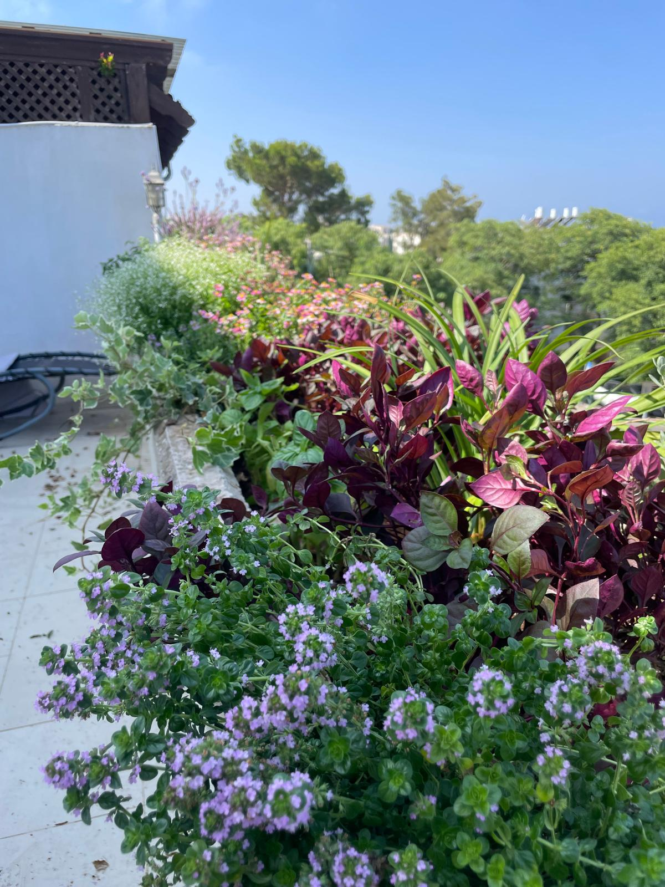

8-9 מפגשי זום בליווי אישי בקבוצת וואטסאפ, בשעות הערב, החל מ-22.4. הקורס נותן כלים מעשיים להקמה ותחזוקה של גינת נוי אקולוגית – חוסך כסף, משביח את הקרקע, וצובע את הבית בטבע.
לגננים חובבים, בעלי גינות פרטיות, אנשי טבע, מעצבי פנים וכל מי שרוצה להפוך את פיסת האדמה שלו לגן פורח, בר קיימא ומלא חיים – בלי צורך בידע מוקדם.
תחושת מסוגלות, חסכון במים ובזמן, גינה צבעונית ובריאה – והנאה מהדרך!
"מהשיעור הראשון למדתי המון – על האדמה שלי, על הצמחים שלי, על מה עשיתי לא נכון, ובעיקר איך אפשר אחרת. כל שיעור נתן לי השראה. תודה אדמתי!"
הרשמה מוקדמת מ-350 ש"ח בלבד! המחיר עולה בהדרגה עד ל-600 ש"ח.
השאר/י מספר טלפון ונחזור עם כל הפרטים!